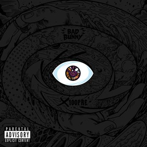

X 100PRE
X 100PRE
His debut studio album, released on Christmas Eve 2018. The “third eye” on the cover became a symbol he still brings to his live shows.
- Ni Bien Ni Mal
- 200 MPH
- ¿Quién Tú Eres?
- Caro
- Tenemos Que Hablar
- Otra Noche en Miami
- Ser Bichote
- Si Estuviésemos Juntos
- Solo de Mí
- Cuando Perriabas
- La Romana
- Como Antes
- RLNDT
- Estamos Bien
- MIA